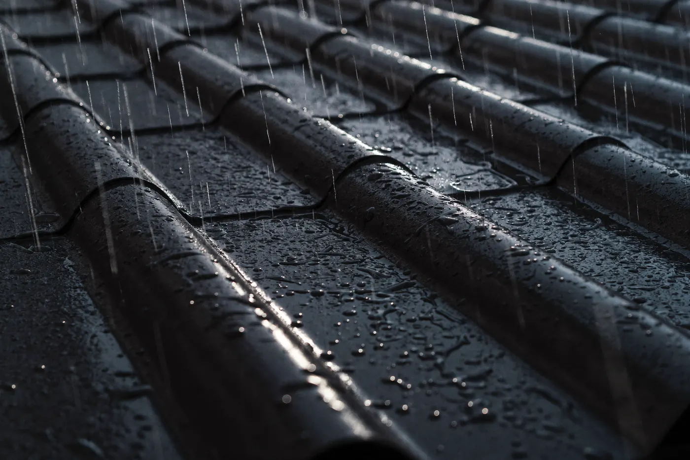
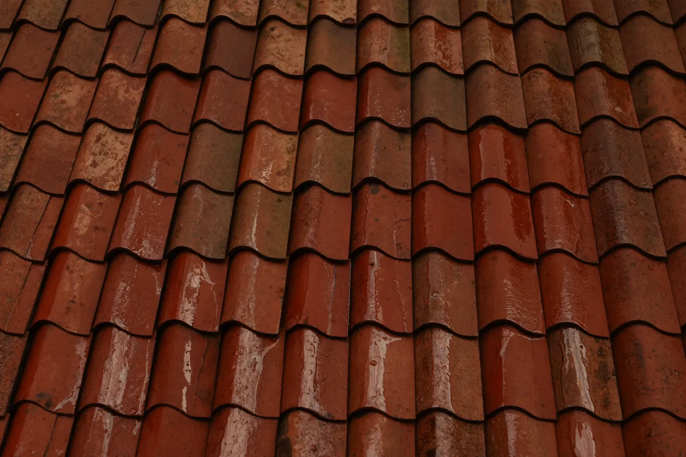
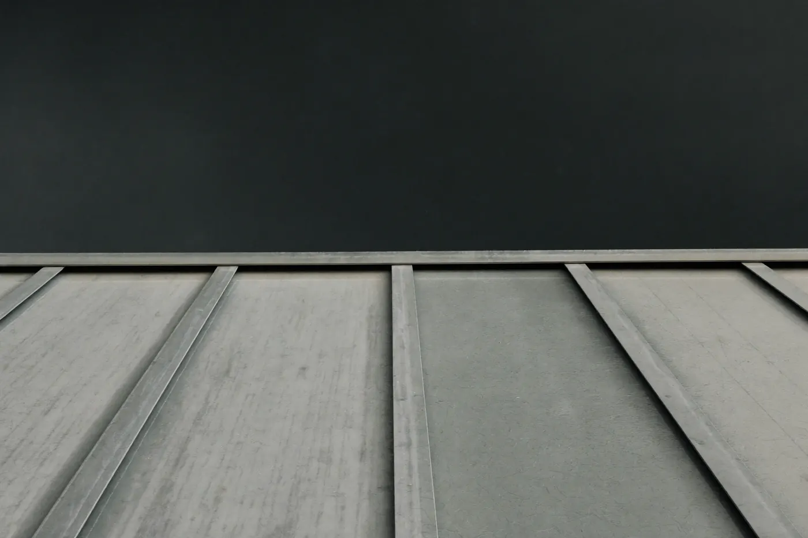
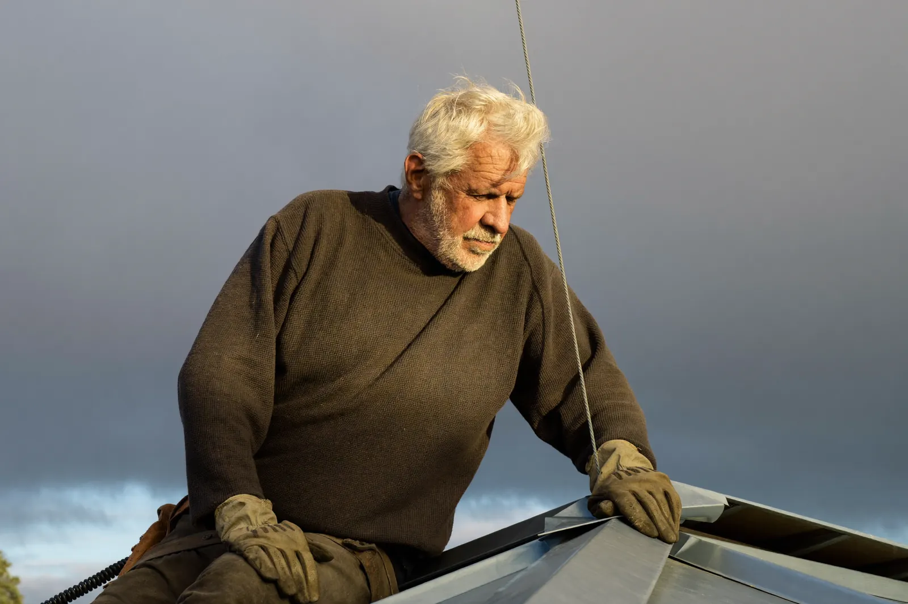

Re-roofing and roof plumbing for weather that means it.
Trade
Roof plumbing · re-roofing
Range
Pitched 5°–45° · low-slope tray
Rated
Coastal wind class, stated in writing
Basis
Fixed quote after inspection
Chapter — anatomyR&V · 01
A roof is a system, not a surface
What fails in a storm is almost never the sheet you can see. It is the
ridge capping that was face-fixed instead of clipped, the sarking that
stops short of the valley, the gutter that was never sized for the
catchment above it. A re-roof replaces the system.
Every line in this drawing is an item on our quote,
named the same way — nothing hides inside an allowance.
Chapter — materialsR&V · 02
Three roofs we stand behind
The material is the product — your house wears it
for forty years. Specs stated plainly; colours from the standard
colour-bonded range, chips below each.

Profiled steel
Sheet
0.48 BMT, continuous lengths
Min pitch
5 degrees
Fixing
Concealed clip or crest-fixed
In rain
Loud and proud — insulate if you'd rather not hear it
BasaltOxideZincGum
The workhorse. Light, fast to lay, happiest on long simple pitches.

Terracotta tile
Unit
Kiln-fired clay, interlocking
Min pitch
15 degrees
Fixing
Sarked, clipped in exposed zones
In rain
Quiet — the mass soaks the sound
OxidePeatBasalt
Heavy, beautiful, and honest about it — the frame must be rated for the load, and we check before we quote.

Standing seam
Tray
Folded on site, seams locked
Min pitch
3 degrees
Fixing
Fully concealed — no visible fastener on the field
In rain
A low drum — architects ask for it by name
ZincBasalt
The premium answer for low pitches and long clean planes. Costs more; outlasts the mortgage.
Chapter — the storm testR&V · 03
The sky writes the spec
A quote that doesn't name a wind class is a guess. Every roof we hand
back is rated for its site and the rating goes in the paperwork — this
gauge shows the storm your roof is signed off to shrug at.
Rain intensity88 mm/h
Gust speed104 km/h
Gutter load31 L/min per DP
Design basis stated per site · the gauge above runs to the
coastal wind class we certify against · exceedance is what insurance is for —
and our flashing details are why you rarely need it.
Storm damage right now? We carry tarps on every ute and
fit them free while you wait for the real fix.
temporary fix — book the permanent one
Chapter — the crewR&V · 04

Thirty years on the ridge
The bloke who quotes your roof is the bloke who stands on it. No sales
layer, no subcontracted mystery crew — one licensed team, and the same
two hands on the ridge cap at the start and the end of the job.
Licensed roof plumbing, stated on the quote
Insured for working at heights — certificates on request
Workmanship guaranteed in writing, transferable on sale
Before the season does it for
you. One visit, a torch in the roof space, and a fixed written quote —
or the honest news that your roof is fine and we'll see you in five years.
Book
This is a portfolio demonstration — the business is fictional
If real
The number would sit right here, answered seven days